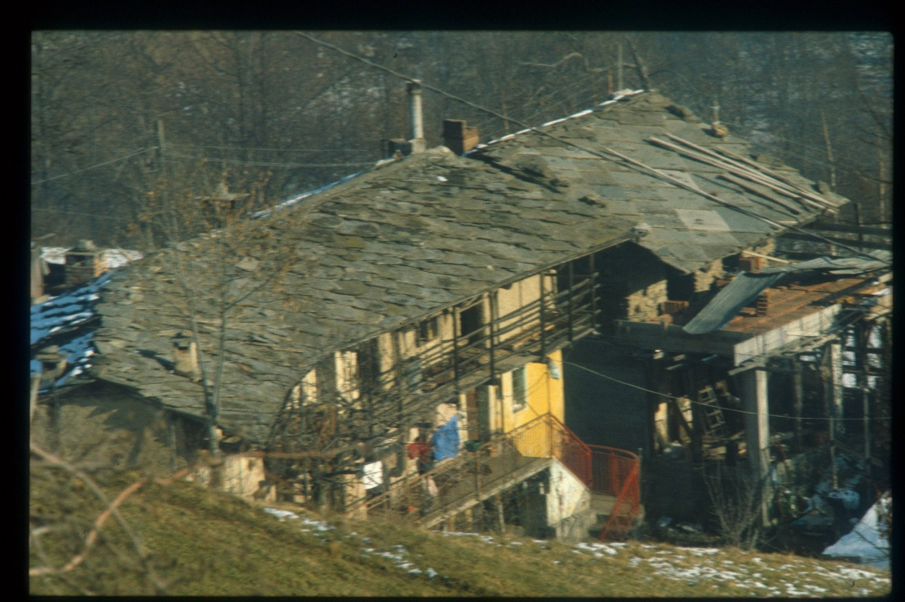

Crêpes
Introduzione e contesto

Sì, certo: Bretagna e Normandia.
Luce, vento, nuvole basse che sembrano uscire da un quadro di Magritte, quasi da toccare.
Ma per me le crêpes non sono lì.
Sono casa mia.

L’estate, la campagna, una cucina semplice ma piena di cose vere: uova del pollaio vicino, farina buona, limoni non trattati, latte appena munto e bollito in casa, burro fresco. Quello che una volta era normale, oggi è diventato straordinario.
Questa è la base.
Quella che si faceva senza pensarci troppo, ma che funzionava sempre.

Ingredienti
| Ingrediente | Quantità | Unità | Note |
|---|---|---|---|
| Uova | 4 | uova | allevate a terra |
| Farina di frumento 00 | |||
| Burro | 50 | g | molto fresco |
| Latte intero | qb | (anche senza lattosio) | |
| Acqua | qb | ||
| Sale | qb | ||
| Zucchero di canna | qb | chiaro e ben macinato | |
| Limone | 1 | BIO e non trattato (si usa la buccia) |
Preparazione
L'impasto.


Imposto la base dell’impasto partendo dalle uova e dalla farina Io comincio sempre dalle uova. Le sbatto a lungo, e quando dico a lungo intendo davvero finché il bianco e il rosso sono completamente uniti, senza più quella sensazione di parti separate che poi renderebbe irregolare tutta la struttura. A questo punto aggiungo poco alla volta la farina.
All’inizio lavoro con la frusta, perché mi serve rompere subito ogni resistenza; poi, quando il composto prende corpo, passo volentieri a un cucchiaio. Non devo avere fretta di diluire. Al contrario: qui voglio che l’impasto diventi denso, quasi tenace, una massa che stia insieme.
Da ragazzo la chiamavo “gomma da masticare”, e l’immagine resta giusta ancora oggi: non per la consistenza finale, naturalmente, ma per quel momento intermedio in cui capisco che la farina ha cominciato davvero a legarsi alle uova.
È proprio in questa fase che si distruggono i grumi. Non si eliminano aggiungendo più liquido, che anzi spesso li nasconde soltanto; si eliminano lavorando, insistendo, costringendo il composto a diventare liscio per forza di mescolatura.
La pastella.


Do elasticità all’impasto e lo porto lentamente alla consistenza giusta. Quando la base è diventata davvero uniforme, incorporo una piccola quantità di burro fuso, sciolto con delicatezza e mai scaldato brutalmente. Il suo compito, in questa fase, non è dare un gusto dominante, ma modificare la tessitura dell’impasto, renderlo più morbido, più elastico, più disposto a stendersi bene in cottura.
Solo dopo inizio a diluire, e lo faccio molto lentamente. Aggiungo acqua e latte poco per volta, senza che siano gelati, e continuo sempre a mescolare. Questo è un passaggio che non perdona la fretta: se verso troppo liquido insieme, o se voglio arrivare subito alla densità finale, rischio di ricreare proprio quei grumi che avevo faticosamente eliminato all’inizio. Io preferisco accompagnare l’impasto, non inseguirlo.
Lo porto gradualmente da massa compatta a pastella fluida, controllando ogni volta come reagisce. Alla fine devo ottenere una consistenza che possa colare, ma non gocciolare come acqua. Deve velare il mestolo, scendere con continuità, non precipitare. A questo punto aggiungo un pizzico di sale e alcune scorze di limone. Il limone non deve imporsi: deve solo sollevare il profumo complessivo e dare una pulizia di fondo.
Il riposo.
Lascio riposare a lungo, poi correggo di nuovo la fluidità prima della cottura Per me il riposo non è un dettaglio accessorio: è una parte piena della ricetta. Lascio la pastella al fresco per diverse ore, e se posso preferisco aspettare il giorno dopo. È proprio durante questo tempo che la farina continua ad idratarsi, si assesta, si distende, e la pastella cambia natura.
Quando la riprendo in mano, la trovo sempre più addensata. Non è un difetto, è il segno che sta facendo quello che deve. Per questo, prima di cuocere, la riguardo sempre con attenzione e quasi sempre la correggo con un altro poco di liquido.
Questa seconda regolazione è decisiva, perché è quella che mi permette di scegliere davvero come voglio le crêpes. Se lascio la pastella leggermente più sostenuta, verranno un poco più corpose. Se la porto più fluida, posso stenderle molto sottili. Io le preferisco sottili, ma non secche, non come certe versioni da strada che diventano quasi carta asciutta. Voglio che restino fini ma ancora vive, capaci di piegarsi e arrotolarsi senza spezzarsi e senza perdere morbidezza.
La cottura.


Se non riesce farle saltare, va benissimo una paletta sottile. Non dovrebbero esserci problemi a staccarle dalla padella: facilmente l'aria le ha staccate per conto loro gonfiandole.
Nella ricetta base aggiungere zucchero sulla superfice (se pensate di farle salate, ovviamente NO, neppure se pensate a farciture). Quando comincia a prendere un colore ambrato scuro e lo zucchero si è sciolto, arrotolare, o piegare a spicchi e servire caldo in piatto con un altro cucchiaino di zucchero.
Note e osservazioni
Sono indicati tempi di riposo: rispettarli aiuta struttura e sapore del piatto.
Indicazione di tempo presente nel testo: 20 minuti + cottura
Il riposo è fondamentale: senza, la pastella è meno stabile e meno elastica.
La padella conta più della tecnica: quando è giusta, le crêpes si staccano da sole.
Il burro serve solo a lubrificare, non a dare sapore.
Lo zucchero deve appena caramellare.